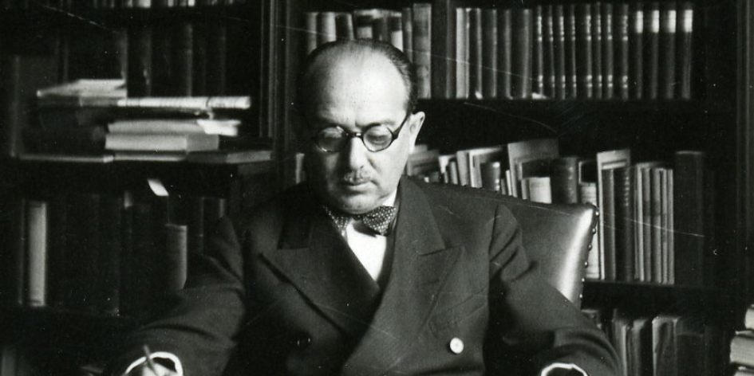

Estes são os ícones que você encontrará ao longo de sua leitura. Eles servem para destacar e chamar atenção para partes importantes, estimular o pensamento crítico, memorizar conteúdos, sugerir informação complementar, dar dicas e sintetizar partes do estudo.
APRESENTAÇÃO
Esta disciplina tem por objetivo ambientar o aluno no universo do Estado de Direito, oferecendo uma compreensão geral de sua origem histórica, sua evolução, suas finalidades e seus desafios. Prepara o aluno para incursões no campo do Direito Público.
1 FORMAÇÃO DO ESTADO MODERNO
De Bodin a Hobbes, o conceito de soberania estabeleceu a relação entre Direito e Poder:
É possível dizer que o debate em torno do conceito de soberania, que se desdobrou na história a partir do século XVI, foi a espinha dorsal em torno da qual o pensamento político foi lentamente concebendo e lapidando a noção de Estado.
Bem observado, esse conceito sustenta que o Direito é produto da vontade do poder soberano. Em outras palavras, a validade normativa decorre da vontade do poder. A consagração dessa ideia ao longo da história foi o Estado Absolutista, no qual o direito era expressão imediata da vontade do Príncipe.
O Estado gestou-se como uma alternativa monista ao pluralismo político-jurídico medievo, no qual conviviam várias ordens jurídicas sobrepostas, cada qual como expressão normativa de um poder diverso.
Cada instância de poder tinha o seu próprio direito (clique nos números):
DIREITO NATURAL
Em outras palavras, o pluralismo jurídico da época era uma expressão do pluralismo político reinante, ou seja, das disputas de poder entre o senhor feudal, o príncipe e a Igreja Católica.
A modernidade ofereceu como alternativa política ao feudalismo uma concepção centralizada e unitária do poder. No Estado de Direito, sua versão acabada e mais plena, Estado e Direito amoldam-se reciprocamente ao ponto de confundirem-se.
No entanto, a evolução de Estado Absolutista para o Estado de Direito demandou a inversão da relação entre Poder e Direito estabelecida no conceito de soberania: nele, é o poder que resulta da validade normativa.
Assim, o poder estatal é determinado e deve ser exercido nos limites das normas jurídicas válidas, sendo definido como um feixe de competências prefixadas por essas mesmas normas jurídicas.
Consolidar essa forma de organização política na história nunca foi – e nunca será – uma tarefa simples. Desde a "República" de Platão, a filosofia política tratou de alertar o pensamento ocidental sobre as artimanhas do poder. É da natureza do poder nunca parecer ser o que é. O poder se alcança e se exerce, via de regra, pela dissimulação e pela invisibilidade: saber dissimular é o saber dos Reis, alertava-nos o Cardeal Richelieu. Daí a importância crucial do princípio da publicidade na constituição do Estado de Direito, emprestando transparência e visibilidade aos atos do poder.
Corretas essas premissas conceituais, podemos concluir que o Estado de Direito é um esforço racional de organização política segundo uma lógica estranha à natureza do poder (a lógica da visibilidade) e uma forma estranha à sua historicidade (a forma jurídico-normativa). Eis o grande desafio de implantar e garantir o Estado de Direito em sua plenitude: reter o exercício do poder nos marcos da legalidade.
Ora, se o Estado de Direito resulta da juridificação do poder, é importante sublinhar que esse fenômeno implica não apenas a legalização do poder num leque de competências, mas também a constitucionalização da soberania interna, submetida ao epíteto juridicista do “poder constituinte”, seja na sua forma originária seja na derivada.
A esse projeto político ajustava-se perfeitamente, no campo teorético, a instrumentalidade ordenadora dos sistemas conceituais subjacentes ao modelo de racionalidade epistêmica das ciências. Como suporte ao projeto de centralização do poder no Estado Moderno, os juristas construíram uma “Ciência do Direito”, passando a concebê-lo como um sistema estatal de normas jurídicas. Dotado de unidade, plenitude e coerência lógica interna, tal sistema de normas jurídicas gerais que se bastavam a si mesmas seria batizado pelo sugestivo epíteto de “ordenamento jurídico”. A partir dessa base comum, cada formação estatal que sucedeu na história demandou uma específica estratégia no campo do direito.
2 A EVOLUÇÃO DO DIREITO E DO ESTADO
Neste momento, veremos a evolução do Direito e do Estado.
2.1 O ESTADO LIBERAL CLÁSSICO: CODIFICAÇÃO DO DIREITO E SISTEMA DE REGRAS ESPECÍFICAS
Em sua origem, o pensamento liberal erigiu o “Estado-legislador”, um Estado mínimo e não intervencionista, que não se intrometia no campo da economia e da vida privada em geral, pairando sobre uma sociedade burguesa homogênea – apesar de dividida em classes sociais.
O Estado liberal disseminou a cultura do positivismo legalista, na qual os juristas adotaram uma postura metodológico-filosófica cientificista, na medida em que reduziram o direito aos conteúdos normativos da lei codificada, vinculando o intérprete de modo mais estrito possível, sob o fundamento de que a atividade de elaboração do direito, de cunho político, é atribuição exclusiva do legislador estadual. O berço dessa impostação jusmetodológica identifica-se com o advento do Estado de Direito e dos códigos civil e penal.
O Estado Liberal almejava encerrar na lei ordinária toda a experiência jurídica, uma lei geral e abstrata, oriunda de amplos debates nas casas legislativas; uma lei codificada, feita para ser duradoura e com pretensões de exaurir a matéria regulamentada.
Essa lei não casuística valeu-se da linguagem natural para a construção de seus enunciados normativos e, internamente, perseguiu a maior harmonia lógico-sistemática possível. Uma lei que pretendia oferecer aos juristas um sistema de normas jurídicas como dados objetivos, de modo a permitir a sua aplicação nos limites de um modelo judicial subsuntivo, inspirado na figura do silogismo judiciário. A essa lei deram o nome de código.
Com um direito organizado em grandes códigos, pretendeu-se oferecer aos conflitos judicializados uma única solução normativa válida. Assim, o pensamento jurídico continental submeteu o ato decisório a um controle racional inspirado no modelo de inferência silogística.
Com efeito, a norma jurídica geral é o critério pelo qual o sistema escolhe o problema: não sendo o conflito subsumível ao sistema normativo, constitui-se num falso problema jurídico, ou seja, um conflito não jurídico. De igual modo, nos conflitos que interessam ao direito, só são juridicamente relevantes os aspectos que se enquadram na norma geral. Toda a conflitividade transbordante ao esquema da lei não interessa à discussão judiciária do conflito.
Dessa concepção de lei codificada emergia a figura de um juiz politicamente neutro, que atuava mediante atos de natureza meramente cognitiva, aplicando objetivamente o direito posto: um direito legislado sob a forma de sistema normativo aplicável por atos de conhecimento (atos técnicos) e não de vontade (atos políticos).
Essa lei deveria encerrar objetivamente uma ratio decidendi colocada na anterioridade do ato jurídico-decisório, com um alcance vinculativo absoluto que garantiria, de um lado, a segurança jurídica dos cidadãos e, de outro, a separação radical entre as funções de elaboração (legislativa) e aplicação (judicial) do direito.
2.2 A SOCIAL-DEMOCRACIA COMO ESTADO INTERVENTOR: DESCODIFICAÇÃO DO DIREITO E MULTIPLICAÇÃO INFLACIONÁRIA DAS LEIS
Ao Estado liberal seguiu-se a social-democracia e seu Estado-administrador que, insatisfeito com a mera função de elaborar as regras gerais do “jogo social”, participou desse jogo de forma ativa e intervencionista, estendendo seus tentáculos sobre a economia e achatando os limites da iniciativa privada, buscando impor-se sobre o mercado regulador.
Para cumprir esse novo papel, já não bastava ao Estado a estratégia de legislar por normas gerais e abstratas, desenvolvidas por meio de amplos debates parlamentares. Antes, a atividade legislativa deslocou-se para o âmbito do Poder Executivo, que passou a elaborar leis de gabinetes feitas por tecnocratas, com linguagem prolixa e altamente técnica. Enfim, leis de pouca publicidade e de parco alcance geral. Leis tipicamente casuísticas, feitas na sua grande maioria para administrar problemas imediatos da gestão da coisa pública, hipertrofiada em face do novo modelo de Estado.
Assim, o Estado-providência deu ensejo ao fenômeno da multiplicação inflacionária da base legal da ordem jurídica e, como desdobramento, ao fenômeno da descodificação do direito, ambos provocando desprestígio crescente da lei. Como modelo, no entanto, a social-democracia exauriu-se, vencida por uma onda de globalização da economia e pelo encolhimento do Estado-administrador intervencionista. Foram as primeiras manifestações do neoliberalismo.
2.3 O ESTADO NEOLIBERAL E AS AGÊNCIAS REGULADORAS: A DESLEGALIZAÇÃO DO DIREITO
Da social-democracia restou um Estado hipertrofiado e pesado, de manutenção cara e de difícil gestão, com efeitos negativos sobre a economia. Em resposta, gestou-se na história o Estado neoliberal, no qual se trabalhou o enxugamento dessa pesada máquina estatal concebida pela social-democracia para conduzir as políticas sociais, abrindo caminho para as privatizações das empresas públicas (clique nos pontos para ver as características do Estado Neoliberal).
Em contrapartida, como os direitos sociais ficariam expostos aos interesses do mercado, criaram-se as agências reguladoras como ferramentas de proteção. Essas agências tinham como função regular setores estratégicos do mercado por meio de atos normativos, ou seja, normas jurídicas resultantes do exercício de competências administrativas, e não legislativas. Tais atos normativos pelos quais se exerce o poder regulatório das agências são atos administrativos e não leis.
Portanto, agravando o processo de desfiguração do direito pela descodificação promovida pela social-democracia, no Estado neoliberal a função de elaboração normativa, principalmente no que diz respeito às políticas públicas, refoge ao campo legislativo com a prática de atos normativos autônomos da administração, dando ensejo ao fenômeno da deslegalização do direito. Surge um poder administrativo com vocação legisladora.
3 CONSTITUCIONALIZAÇÃO DO DIREITO E A LUTA PELAS POLÍTICAS PÚBLICAS NO BRASIL
Essa evolução histórica das formas do Estado e do Direito deu ensejo a um processo lento de constitucionalização do direito, fazendo surgir uma nova forma estatal: o Estado Constitucional de direito.
Decorre desse deslocamento de funções o esforço atual em imprimir força normativa ao texto constitucional. Com isso, pretende-se opor os direitos fundamentais – historicamente positivados nas constituições – à onda neoliberal que assola a economia mundial e que consiste em transmudações globalizantes de um capitalismo que se mostra tão concentrado na ocupação de mercados emergentes quanto insensível às necessidades básicas do ser humano.
O papel do direito em cada uma das formações do Estado ao longo da história, a toda evidência, é significativamente diverso. As transformações do Estado e da economia provocam mutações radicais nas práticas político-administrativas e nas estratégias normativas e jurisdicionais. Ao ímpeto codificador e universalizante dos umbrais da modernidade, seguiu-se um processo de proliferação legislativa que estimulou a dessacralização dos diplomas legais sistemáticos, universais e de alcance geral, provocando a decadência do modelo subsuntivo de aplicação do direito.
No Brasil atual, vivemos um avançado processo de descodificação do direito e de multiplicação inflacionária dos textos legais. Soma-se a isso o crescimento de um imenso corpo de normas jurídicas infralegais: os atos normativos decorrentes do exercício do poder regulador das políticas públicas constitucionalizadas. À decadência da “lei codificada” sobrepõe-se uma nova ordem jurídica brasileira inflacionada pelo excesso de leis e atos normativos, fragmentada e difusa, em que o “mínimo sistemático” é garantido pela função harmonizadora cumprida por uma rede de princípios insculpidos na Constituição Federal.
É certo que os princípios emprestam alguma sistematicidade ao direito infraconstitucional descodificado, uma sensação de unidade pairando sobre diversidade profusa das normas do direito atual. No entanto, o recurso aos princípios constitucionais não se mostra suficiente para impedir a crescente onda de ativismo judicial no Brasil, pois nessa nova forma de organização do direito resta comprometido um dos mais importantes princípios de uma ordem jurídica positivada, cuja função primordial é garantir o equilíbrio e a separação dos poderes: o princípio da unidade normativa.
As normas da constituição deixam de ser vistas como meros enfeites de um pacto político e, tomadas efetivamente como direito, passam a ser objeto de aplicação pela via jurisdicional. No entanto, é de se observar que o advento da jurisdição constitucional e a perda generalizada de unidade normativa no ordenamento jurídico brasileiro resultam no agigantamento do ativismo judicial, deslocando o ponto de equilíbrio da tripartição dos poderes e provocando ferrenhas disputas entre Executivo, Legislativo e Judiciário, amplamente testemunhadas nos dias de hoje.
Um dos subprodutos mais manifestos desses novos desarranjos na formação do Estado é a crescente judicialização das políticas públicas, dentre elas a política de saúde. A judicialização desenfreada da saúde deixa entrever um atropelo das competências administrativas dos gestores pelo Poder Judiciário, tornando a política cada vez mais caótica e ingovernável.
4 ESTADO DE DIREITO E SISTEMA NORMATIVO: DOIS PRINCÍPIOS ESTRUTURANTES DA SEPARAÇÃO DOS PODERES
Num direito organizado sob a forma de sistema, a complexidade e a extensão dos temas tratados pelas normas jurídicas se equilibram sobre uma rede axiológica própria, constituída por princípios estruturantes fundamentais tanto para orientar a sua elaboração pela via legislativa quanto para o exercício do pensamento decisório que anima a sua aplicação pela via judicial. Dentre eles, destacamos estes dois:
Essas duas ideias retoras do direito se manifestam no campo da elaboração legislativa, para que as leis possam efetivamente emprestar ordem às relações sociais. Evidenciam-se, de igual modo, por sua capacidade instrumental de impor os limites necessários às práticas sensíveis de se aplicar normas coativas a condutas alheias para se garantir a segurança jurídica dos cidadãos.
5 O AXIOMA ONTOLÓGICO DO DIREITO E OS LIMITES DAS FUNÇÕES JUDICIAIS: VOLUNTARISMO E CRIACIONISMO JUDICIAL DO DIREITO
As normas jurídicas se traduzem em imperativos hipotéticos.
Essa definição oferecida pela jurisprudência da valoração no clássico “Introdução ao pensamento jurídico”, de Karl Engisch, deixa transparecer uma dimensão psicológica inerente aos comandos normativos: eles só ocorrem dentro de relações de hierarquia.
Os comandos oriundos da soberania estatal se dirigem, em grande medida, aos cidadãos comuns. Dessarte, em face da imensa desigualdade hierárquica entre as partes, o poder de mando estatal e seu respectivo controle devem ter limites rigorosamente definidos. É preciso vincar a fronteira entre o proibido e o permitido.
Ao tomar decisões judiciais criando proibições que não existem no sistema normativo, o estado-juiz invade o campo das liberdades, ofendendo o direito posto. O direito deve ser mantido, o tanto quanto possível, como uma intersecção de proibições claras e destacadas na linha infinita das liberdades humanas.
Esse desenho lógico-normativo oferecido pelo axioma ontológico do direito, fundamental por estabelecer marcos que impõem limites às práticas jurídicas e de controle, toma outros contornos no âmbito do direito público: os poderes constituídos só podem fazer o que lhes é legalmente permitido, a estrutura do Estado se organiza assim mediante um sistema de competências.
A racionalização do exercício do poder pela tripartição de suas funções essenciais exigia, entre outras coisas, não mais que se confundissem sob o manto de uma mesma autoridade os atos de elaboração e aplicação do direito. A decisão judicial fundamentada na lei limitar-se-ia, nesses moldes, ao exercício de mera cognição, garantindo-lhe uma natureza exclusivamente técnica, enquanto a elaboração legislativa do direito estaria calçada em atos de natureza política.
A modernidade pretendeu fulminar o poder decisório da magistratura em máximas, como a da proibição de interpretação do Código de Napoleão, pela qual o juiz francês não passaria de uma simples “boca da lei”. Surge a figura do juiz racional, sustentada pelos positivistas. Assim, o direito passou a ser, de um lado, o produto resultante da atividade política do Poder Legislativo e, de outro, o limite do poder decisório judicial. Ao fim e ao cabo, buscou-se oferecer um critério objetivo e apriorístico de definição jurídica dos direitos tuteláveis pelo Estado, o que corresponde à ideia fundamental de segurança jurídica.
6 PRINCÍPIOS DA UNIDADE NORMATIVA E TRIPARTIÇÃO DO PODER: CRISE DO SISTEMA E DA VINCULAÇÃO E ATIVISMO JUDICIAL
Os conceitos de unidade normativa e de coerência interna das normas se implicam mutuamente: se há unidade normativa é porque há coerência entre as normas, e vice-versa. Essas duas noções estruturantes emprestam “ordem” às normas jurídicas, dispondo-as sob a forma lógica de uma totalidade chamada “ordenamento jurídico”.
A unidade normativa perfaz um dos mais importantes princípios jurídicos do Estado de Direito, tornando viável o controle racional do poder estatal pela tripartição de suas funções: ela impõe ao direito a forma sistêmica de organização.
Sem sombra de dúvida, não se vincula um juiz a um catálogo de normas, vincula-se a um sistema normativo. E a ausência de vinculação produz um efeito dominó catastrófico:

Para além dessa perspectiva estruturante do Estado de Direito, o princípio da unidade normativa também cumpre objetivos funcionais. Ao impor às normas jurídicas uma organização sistêmica, permite ao complexo de comandos estatais cumprir a relevante função ordenadora do corpo social. Duas ordens divergentes não coabitam o mesmo espaço ao mesmo tempo: uma é desordem em relação à outra.
A complexidade crescente da sociedade tem provocado uma multiplicação exponencial das normas jurídicas, transformando o direito num extenso e desordenado labirinto de leis esparsas e atos normativos, por vezes redigidos entre paredes pela burocracia estatal veiculando interesses casuísticos, sem o menor compromisso com o princípio da unidade normativa.
O direito perde consistência e força de vinculação, dando azo a toda forma de voluntarismos e ativismos no exercício dos poderes públicos, em especial ao de aplicar suas normas e ao de fiscalizar a efetividade delas. Não há como vincular as práticas judiciais a um direito que já não mais se manifesta sob a forma de sistema.
Do ponto de vista lógico-normativo, o sistema legal determina em que medida um conflito é jurídico ou não, definindo seus contornos e encaminhando uma única resposta judicial possível. Não se ignora, a textura aberta da linguagem flexibiliza substancialmente tais limites lógicos. As imprecisões dos limites semânticos da linguagem da lei tornam ainda mais grave a desatenção à necessidade imperiosa e permanente de se emprestar a máxima unidade normativa possível aos comandos legais e infralegais do Estado.
Um direito irresponsavelmente assistemático assume a condição de catálogo ao oferecer um leque de opções normativas ao aplicador e ao controlador, inviabilizando a vinculação e descumprindo as demandas de segurança jurídica e de ordem nas atividades do Estado e nas relações sociais.
Como sintoma dessa perda de sistematicidade, que também decorre da crescente complexidade das relações sociais, os campos de indefinição normativa se agigantam transformando-se em imensas zonas gris, onde se multiplicam desarmonias entre os poderes constituídos, conflitos e divergências entre os órgãos públicos quanto aos limites das competências e atribuições de cada um e, em especial, entre os múltiplos operadores que fazem funcionar o sistema judicial. Como resultado, o Estado se desorganiza e a cidadania se desqualifica.
Como resultado, o direito sanitário infralegal se desenvolve como um imenso catálogo de portarias sem a menor coerência interna. Um cipoal assistemático de normas que não oferecem respostas claras e sistêmicas aos aplicadores do direito. Compromete-se, assim, a vinculação da magistratura que, por sua vez, enfrenta uma onda cada vez mais tsunâmica de ações judiciais no campo da saúde.
Além de fomentar a desestruturante e crescente judicialização da política sanitária, esse cipoal caótico e desordenado de portarias decorrente do desprezo ao princípio da unidade normativa abre espaço para o ativismo judicial, seara na qual o Poder Judiciário acaba assumindo o exercício de um poder regulatório que, na estrutura constitucional, compete exclusivamente ao Executivo, mais especificamente ao gestor da saúde.
Portanto, retomar a consciência da importância do respeito à unidade normativa na elaboração do Direito para a superação dos conflitos e desarranjos entre os poderes públicos é um dos grandes desafios do pensamento político e do constitucionalismo na presente década, em busca da evolução, do reequilíbrio e do aprimoramento das formas do Estado.
2 A PASSAGEM DA DOGMÁTICA À CONSTRUÇÃO JURÍDICA
Neste segundo ponto sobre a passagem da dogmática à construção jurídica, Losano (2008) ensina que dogma remete a um elemento conceitual que desempenha específicas tarefas no pensamento teológico.
Especificamente em relação à dogmática jurídica, Losano (2008) sustenta que se deve estritamente observar o elemento interpretado como ponto de partida e a respectiva indiscutibilidade da base fulcral contida na interpretação do Direito: a norma jurídica. Sem esta, a atividade teleológica – e não teológica! – do jurista não faria qualquer sentido.
O modus operandi do jurista, na praticidade de seu cotidiano, devia se mover, portanto, entre dois limites intransponíveis:
O ponto de partida é a norma jurídica como dogma que auxiliaria na resolução do caso concreto, este como um ponto de chegada.
Em um segundo momento, com a construção jurídica, passa-se à fase criativa da atividade do jurista, sem se prender a dogmas, ou seja, sem se prender à intepretação formal e obtusa da norma jurídica.
O conceito de construção jurídica pode ser evidenciado por Jhering (2001), definido como qualquer atividade que tenha por objeto a estrutura de um corpo jurídico. Esse jurista alemão também desenvolve três leis que regem a construção jurídica dessa mesma estrutura:

Desse modo, Jhering (2001) sintetiza que o direito plasmado pela construção normativa teria o sistema como a forma mais benéfica para a matéria positivamente constituída e que o mesmo sistema não deixaria de ser a fonte de nova matéria. É importante ressaltar que, neste momento, a criatividade do jurista faria parte da positivação normativa, impondo-se aos dogmas. Assim, houve a passagem histórica da dogmática à construção jurídica, em uma interpretação mais criativa da norma jurídica.
Percebemos, por fim, que a passagem da dogmática à construção jurídica apresenta um diálogo efetivo com o primeiro ponto sobre sistema e estrutura do Direito, realçando uma incipiente ciência do Direito. Também veremos que esse debate inicial serve como introito às discussões sobre direito natural e positivismo jurídico.
3 O DIREITO NATURAL, O POSITIVISMO JURÍDICO E O PÓS-POSITIVISMO
Vamos estudar um pouco mais sobre essas escolas teóricas adiante.
3.1 O DIREITO NATURAL
Segundo Bedin (2014), o direito natural ou jusnaturalismo iniciou-se na Grécia Antiga, sendo relevante até o final do século XVIII, representava um direito ideal que condicionaria validade de acordo com as seguintes características (clique nos números):
DIREITO NATURAL
Bedin (2014) relata três influências sobre o direito natural (ou jusnaturalismo): natureza em si, Deus e natureza humana, respectivamente, Direito Natural Cosmológico, Direito Natural Teológico e Direito Natural Antropológico.
Portanto, depois da descrição dessas três características/influências que formaram no decorrer da história o que conhecemos como direito natural, entramos em uma nova fase do direito com o assim denominado positivismo jurídico, com a tarefa de contrapor-se a esse jusnaturalismo.
3.2 O POSITIVISMO JURÍDICO
Manifestando-se com base na ineficácia do idealismo principiológico e na recusa em incluir juízos de valor no raciocínio jurídico é que se forma, no início do século XX, o positivismo jurídico. Teoria essa em explícito contraponto ao direito natural.
O principal nome do positivismo jurídico é Hans Kelsen, que formulou a Teoria Pura do Direito, com o objetivo de delimitar o campo do conhecimento jurídico à possibilidade descritiva e de conhecimento do sistema normativo. A partir dessa análise normativa, o Direito posto (norma) seria o objeto científico sobre o qual o jurista deveria se debruçar.
Figura 1. Hans Kelsen.
Fonte: https://estadodaarte.estadao.com.br/streck-positivismo-kelseniano/.
Kelsen (2009) concebe o positivismo jurídico de modo “puro”, esvaziando os elementos metafísicos e idealistas sobre a natureza do Direito. Na visão de Kelsen (2009), ratificada por Losano (2010), há três características fundamentais do positivismo jurídico:

Na visão de Kelsen, o Direito deveria ser independente e autônomo em relação às outras ciências, como a Sociologia, Economia, Política etc. Estas poderiam servir até como ciências auxiliares, mas o Direito deveria se constituir como uma ciência pura, soberana, sem se “contagiar” por esses outros ramos da realidade.
Dessa forma, o positivismo jurídico contém uma validade consubstanciada em força obrigatória: suas normas devem ser incondicionalmente obedecidas pelas autoridades públicas e por todos os cidadãos, independentemente de seu conteúdo. Sendo assim, não caberia ao jurista formular qualquer juízo de valor acerca do Direito. Se a norma fosse válida, deveria ser aplicada sem questionamentos (MARMELSTEIN, 2019).
Logo no início da clássica obra “Teoria Pura do Direito”, Kelsen define o que seria sua proposta de positivismo jurídico:
3.3 O PÓS-POSITIVISMO JURÍDICO
O positivismo jurídico foi deturpado como justificativa normativa dos regimes totalitários do século XX (nazismo, fascismo e comunismo), caindo em descrédito perante o mundo do Direito e abrindo as portas para entrada de uma nova teoria: o pós-positivismo jurídico. Um detalhe importante: apesar de algumas críticas ao excessivo apego à norma, Kelsen continuaria como grande referência e inspiração.
Segundo Marmelstein (2019), o principal objetivo do pós-positivismo – e muito em decorrência do desastre perpetrado pelos totalitarismos – seria a proteção da dignidade humana, devendo haver um considerável conteúdo humanitário na normatização positivada.
Bonavides (2020) complementa esse viés afirmando que não somente a lei teria preponderância, mas também os valores e princípios que, em sua visão, constituiriam um pedestal normativo sobre o qual assentaria todo o edifício jurídico dos novos sistemas constitucionais a serem refeitos.
Dessarte, no pós-positivismo, a norma continuaria a ser a maior estrela da constelação jurídica. E Kelsen preservaria sua importância no sentido de revigorar a força normativa dos direitos fundamentais. Haveria destaque, portanto, para a normatização dos princípios jurídicos, tal como a já mencionada dignidade da pessoa humana, além da igualdade, da autonomia da vontade, da liberdade de expressão, da democracia etc., reconhecendo-se, finalmente, a força, eficácia e concretude jurídico-normativa dos princípios, base celular do Estado Democrático de Direito.
Assim, resumimos as principais características do pós-positivismo como as seguintes:
As constituições das repúblicas pós-guerra – formadas principalmente na segunda metade do século XX – foram influenciadas pelo pós-positivismo, enunciando princípios e regras como normas eficazmente válidas e apresentando como primado fulcral a dignidade da pessoa humana. É o caso da nossa Constituição da República Federativa do Brasil, promulgada em 5 de outubro de 1988 e vigente até os dias atuais como baluarte em defesa do Estado Democrático e Social de Direito.
4 A FUNÇÃO E GÊNESE DA NORMA JURÍDICA: A IMPORTÂNCIA DA CONSTITUIÇÃO E DA NORMA FUNDAMENTAL KELSENIANA
Depois de enunciarmos uma linha evolutiva da ciência do Direito subsumida em conceitos como estrutura e sistema, doutrinas como o direito natural, o positivismo e o pós-positivismo, descreveremos nesta parte a função e gênese da norma jurídica, realçando ainda mais o pensamento do clássico Hans Kelsen.
Como já anteriormente citado, Kelsen foi um dos maiores teóricos da ciência jurídica, responsável por uma Teoria Pura do Direito, objetivando uma sistematização científica por meio de seu escalonamento hierárquico de normas jurídicas – a assim denominada “pirâmide kelseniana”.
O nome desse jurista austríaco está acima de qualquer polêmica juspolítica e é utilizado não somente pelos defensores do positivismo, mas também pelos adeptos das inovações e atualidades demonstradas pela escola do pós-positivismo.
Na sua obra principal, “Teoria Pura do Direito”, a validade do direito positivo é explicada por meio de uma estrutura piramidal de escalonamento hierárquico na qual as normas de nível inferior recebem a sua validade das normas superiores, e assim sucessivamente. Como exemplo atualizado, apenas para ilustrar o entendimento:
Figura 2. Pirâmide de Kelsen.

Veja que as resoluções e portarias estão na base ou piso da pirâmide e seguem uma ordem de validação superposta até o respectivo topo hierárquico: decretos, leis ordinárias, medidas provisórias e tratados, leis complementares, emendas constitucionais. Por fim, todas essas normas recebem sua validação pelo documento jurídico mais importante do escalonamento: a Constituição Federal.
Portanto, a norma positiva mais elevada e importante da pirâmide kelseniana é a Constituição, que incrivelmente também não deixa de receber sua validade pela, assim denominada por Kelsen (2009), “norma fundamental hipotética”, que está no topo do topo da pirâmide.
Essa norma fundamental hipotética kelseniana fornece validade não somente para o corpo normativo principal (a Constituição), mas para todo o sistema e estrutura do Direito construído da base ao topo da pirâmide.
Losano (2010) conceitua a norma fundamental, elemento basilar para o entendimento da pirâmide kelseniana, da seguinte forma:
A concepção de Kelsen na formulação da pirâmide normativa parte do pressuposto de que, para uma norma existir e ser válida, é necessário um respaldo nas normas superiores, que facultem ao legislador, então, produzir as normas inferiores. Das normas superiores, abre-se o campo lógico de validade das normas inferiores, mas a criação da norma, ainda assim, é um ato de vontade, que se abre aos impulsos reais da imbricação do direito com a totalidade social.
De acordo com Carvalho (2012, p. 76):
Outro ponto importante sobre a pirâmide normativa é que Kelsen compreende a pluralidade das normas jurídicas em termos de um ordenamento, o que acarreta, necessariamente, a questão de sua coerência como um sistema e estrutura do Direito. Ou seja, as normas jurídicas são plurais e abundantes dentro de um Estado, muitas vezes até mesmo contraditórias. No entanto, para Kelsen, a ciência do Direito somente pode ser pensada a partir de uma construção escalonada do ordenamento jurídico, que estabelece patamares tendo por base a hierarquia das normas.
O sistema e a estrutura do ordenamento jurídico kelseniano se concretizam, ainda, por meio da validade das normas. A validade é a qualidade da norma que revela sua adequação formal e material ao ordenamento. Uma norma só é válida porque normas hierarquicamente superiores lhe dão esse manto. Não é no mesmo patamar que se vislumbra a validade de uma norma: devem-se observar os escalões superiores para identificar a validade de uma norma inferior (LOSANO, 2010; MASCARO, 2010).
Em nosso país, por exemplo, podemos afirmar que existe relação hierárquica entre a Constituição Federal e as Constituições Estaduais e Leis Orgânicas Municipais. Nesse caso, a Constituição Federal situa-se em um plano superior em relação a todas as demais. Por sua vez, a Constituição Estadual está situada de forma superior à Lei Orgânica Municipal, e a Lei Orgânica do Distrito Federal é equiparada à Constituição Estadual. Portanto, nenhuma norma do ordenamento pode se opor à Constituição Federal, sendo esta a Lei Maior de nossa nação.
A importância da norma fundamental hipotética elaborada pelo gênio de Kelsen responde à indagação de como se sustenta a validade de todo o ordenamento jurídico estruturado em torno da Constituição. Ou melhor: quem dá validade às normas mais altas do ordenamento, isto é, às normas constitucionais?
O próprio Kelsen responde ratificando a importância da elaboração da norma fundamental hipotética:
A norma fundamental, portanto, é a diretriz do pensamento que sinaliza ao jurista que tal ordenamento é válido, aquele a que se deve referir no que concerne às atividades jurídicas. A natureza da norma fundamental, segundo Kelsen (2009), refere-se imediatamente a uma Constituição determinada e efetivamente estabelecida.
Conforme Mascaro (2010), a norma fundamental é uma hipótese que permite pensar o ordenamento jurídico. Trata-se de uma condição para a compreensão da cadeia lógica das validades de um ordenamento. É necessário ter como pressuposto desse escalão hierárquico de normas jurídicas que, a partir do topo, deve-se seguir a Constituição.
CONSIDERAÇÕES FINAIS
Neste pequeno estudo, tentamos destacar o início de formação da Ciência do Direito, analisando a função e a gênese da norma jurídica, instrumento essencial para o trabalho do jurista.
Vimos a evolução em torno do debate das escolas jurídicas: a estrutura e o sistema do Direito; a passagem dos dogmas para a construção criativa da lei – com base sempre na norma, claro! E também alguns aspectos sobre o direito natural, o positivismo jurídico e o pós-positivismo, com seus principais conceitos, teóricos e polêmicas.
Finalizamos tentando compreender a importância da teoria do clássico Hans Kelsen e seu escalonamento normativo hierárquico, que ainda exerce grande influência nos sistemas jurídicos de todo o mundo, especialmente em nosso país.
Esperamos que os estudantes aprendam os principais conceitos apresentados e que possam utilizá-los como condutores para a resolução judicial e extrajudicial no dia a dia de seu trabalho em prol da efetivação do direito à saúde.
REFERÊNCIAS BIBLIOGRÁFICAS
BEDIN, G. A. A Doutrina Jusnaturalista ou do Direito Natural: uma introdução. Revista do Departamento de Ciências Jurídicas e Sociais da UNIJUÍ, ano XXIII, n. 42, jul./dez. 2014.
BOBBIO, N. Teoria Geral do Direito. São Paulo: Martins Fontes, 2010.
BONAVIDES, P. Curso de Direito Constitucional. Salvador: Juspodium, 2020.
CARVALHO, R. S. Pirâmide Normativa de Kelsen: análise sob as teorias constitucionalistas de Ferdinand Lassale e Konrad Hesse. Norte Científico, v. 7, n. 1, 2012.
COING, H. Elementos Fundamentais da Filosofia do Direito. Porto Alegre: Sergio Antonio Fabris Editor – SAFE, 2002.
JHERING, R. von. A finalidade do Direito. Porto Alegre: Casa do Advogado, 2001.
KELSEN, H. Teoria Pura do Direito. São Paulo: Martins Fontes, 2009.
LOSANO, M. G. Sistema e estrutura no Direito: das origens à escola histórica. São Paulo: Martins Fontes, 2008. v. 1.
LOSANO, M. G. Sistema e estrutura no Direito: o século XX. São Paulo: Martins Fontes, 2010. v. 2.
MARMELSTEIN, G. Curso de Direitos Fundamentais. São Paulo: Atlas, 2019.
MASCARO, A. L. Filosofia do Direito. São Paulo: Atlas, 2010.
FICHA TÉCNICA
© 2023. Ministério da Saúde. Fundação Oswaldo Cruz. Escola de Governo Fiocruz.
Alguns direitos reservados. É permitida a reprodução, disseminação e utilização desta obra, desde que citada a fonte. É vedada a utilização para fins comerciais.
Especialização em Direito Sanitário. Brasília: [Curso na modalidade à distância]. Escola de Governo Fiocruz, 2023.
Ministério da Saúde
Nísia Trindade Lima
Ministra da Saúde
Swedenberger Barbosa
Secretário-Executivo
Conceição Aparecida Pereira Rezende
Diretora do Departamento de Gestão Interfederativa e Participativa (DGIP/SE/MS)
Fundação Oswaldo Cruz (Fiocruz)
Mário Moreira
Presidente
Fiocruz Brasília (Gereb)
Maria Fabiana Damásio Passos
Diretora
Escola de Governo Fiocruz Brasília (EGF)
Luciana Sepúlveda Köptcke
Diretora Executiva
Sandra Mara Campos Alves
Programa de Direito Sanitário
Escola de Governo Fiocruz Brasília
Avenida L3 Norte, s/n, Campus Universitário Darcy Ribeiro, Gleba A
CEP: 70.904-130 – Brasília – DF
Telefone: (61) 3329-4550
CRÉDITOS
Coordenação-Geral do Curso
Sandra Mara Campos Alves
Professor
Jarbas Ricardo Almeida Cunha
PRODUÇÃO DO CURSO
Núcleo de Educação a Distância da EGF-Brasília
Coordenação
Maria Rezende
Design Instrucional
Erick Guilhon
Fabrícia Alves
Juliana Bermudez
Sarah Resende
Simone Aguiar
Revisão Textual
Erick Guilhon
Filipe Lopes
Produção Multimídia
Márlon Lima
Philippe Lepletier
Design Gráfico
Daniel Dias
Eduardo Calazans
Thalisson Cruz
Produção Audiovisual
Arthur Gonzaga
Thiago Barreto
Edição AVA
Ivelma Rodrigues
Trevor Furtado
Desenvolvimento
Bruno Cardozo
Gabriel Ferreira
Joana D’Angeles
Rafael Cotrim
Douglas Fernandes
Thiago Xavier
Trevor Furtado
Vando Pinto
Supervisão de Oferta
Meirirene Moslaves
Suporte Técnico
Dionete Sabate
Poliana Silva

Esta obra é disponibilizada nos termos da Licença Creative Commons – Atribuição – Não Comercial – Compartilhamento pela mesma licença 4.0 Internacional. É permitida a reprodução parcial ou total desta obra, desde que citada a fonte.